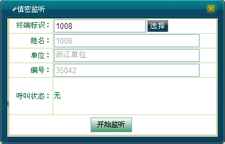
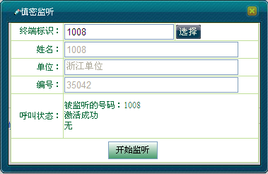
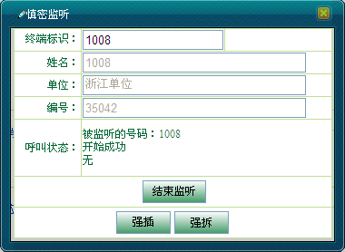
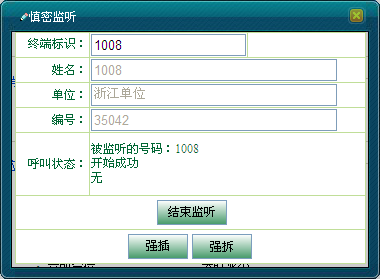
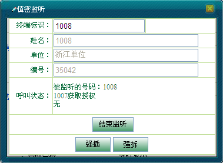
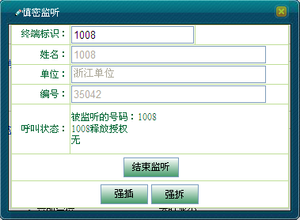

慎密监听（Discreet Listening，简称DL）是指在被监听用户毫不察觉的情况下，调度台对被监听用户进行监听追踪，当被追踪的用户有呼叫产生时，调度台则对该呼叫进行监听。在此基础上，还能对被监听的呼叫进行更深一步的插入和拆除动作。
监听呼叫的结束有两种情况：监听用户主动结束监听；被监听呼叫断开导致监听呼叫被动结束。
慎密监听分为两个过程：
跟踪：监听前的准备，主要是激活DL，是监听的基础；
监听呼叫建立和结束：在调度台对某一移动用户进行跟踪后，当被跟踪的用户有满足监听要求的呼叫产生时，ECN会通知调度台。调度台会以监听模式加入该呼叫中（能够听到呼叫中产生的所有语音，但本身不能发送语音），监听呼叫中的语音。
调度员可通过地图右键选择呼叫业务菜单中的“慎密监听”按钮或者单击［调度功能/呼叫面板］下的“慎密监听”两种方式进行操作，操作步骤类似，在本节中就只介绍其中一种操作。
在本节中主要介绍：
1）在地图上选中移动用户，例如“1008（1008）”。
2）单击右键选择［呼叫业务/慎密监听］，弹出“慎密监听”对话框，如图1所示。

图1. 慎密监听对话框
3）单击＜开始监听＞按钮，此时“开始监听”变为“结束监听”，用户“1008”一直处于被监听状态，界面显示如图2所示。

图2. 慎密监听激活成功
4）当他与任一用户发生全双工单呼时，他们的通话过程将被该调度员所监听。在此基础上，调度员还能对被监听的呼叫进行强插和强拆，如图3所示。

图3. 对全双工通话中用户监听成功
5）若调度员单击＜结束监听＞或者用户结束全双工通话，则慎密监听结束，此时“结束监听”变为“开始监听”，如图4所示。

图4. 结束慎密监听
1）在地图上选中移动用户，例如“1008（1008）”。
2）单击右键选择［呼叫业务/慎密监听］，弹出“慎密监听”对话框。
3）单击＜开始监听＞按钮，监听激活，此时“开始监听”变为“结束监听”，用户“1008”一直处于被监听状态。
4）若此时用户“1008”呼叫“1007”或者被其他用户呼叫，调度员均能监听到用户的整个通话过程，在此基础上，调度员还能对被监听的呼叫进行强插和强拆，如图5所示。

图5. 对半双工通话中用户发起慎密监听
5）若“1007”获取授权发送语音信息，则“慎密监听”对话框显示如图6所示。若“1007”释放PTT键则释放授权。若“1008”获取授权发送语音信息，则界面显示“1008获取授权”，若“1008”释放授权，则“慎密监听”对话框显示如图7所示。

图6. 1007获取授权

图7. 1008释放授权
6）若半双工通话结束或者调度员单击＜结束监听＞按钮，则慎密监听结束。
 说明：
说明：
同一时刻，一个调度台只能对一个用户进行慎密监听。
若用户当前处于未注册状态，则开始监听失败。
Copyright © 2012 Eastcom, Inc. All rights reserved. |
||